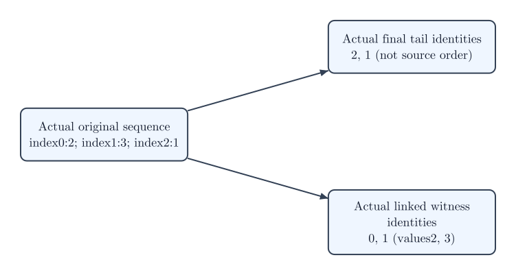
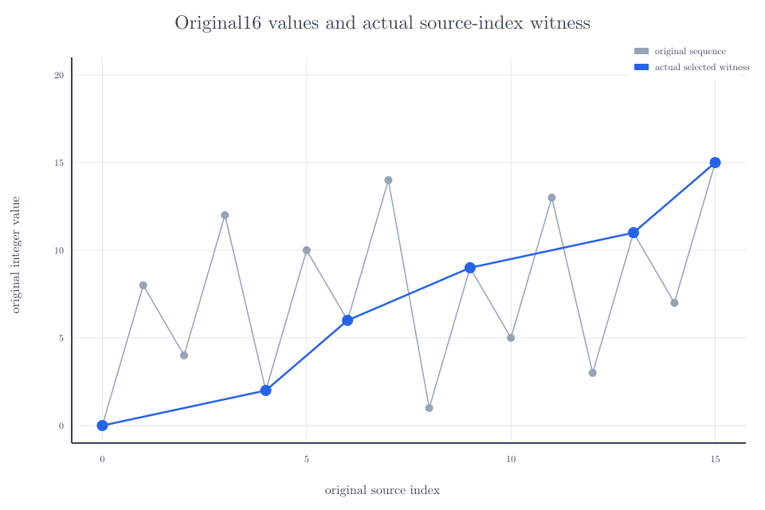
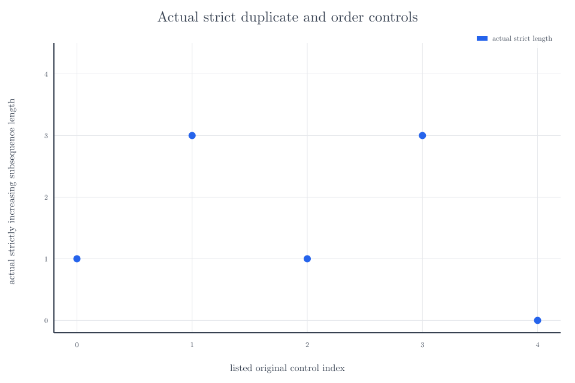
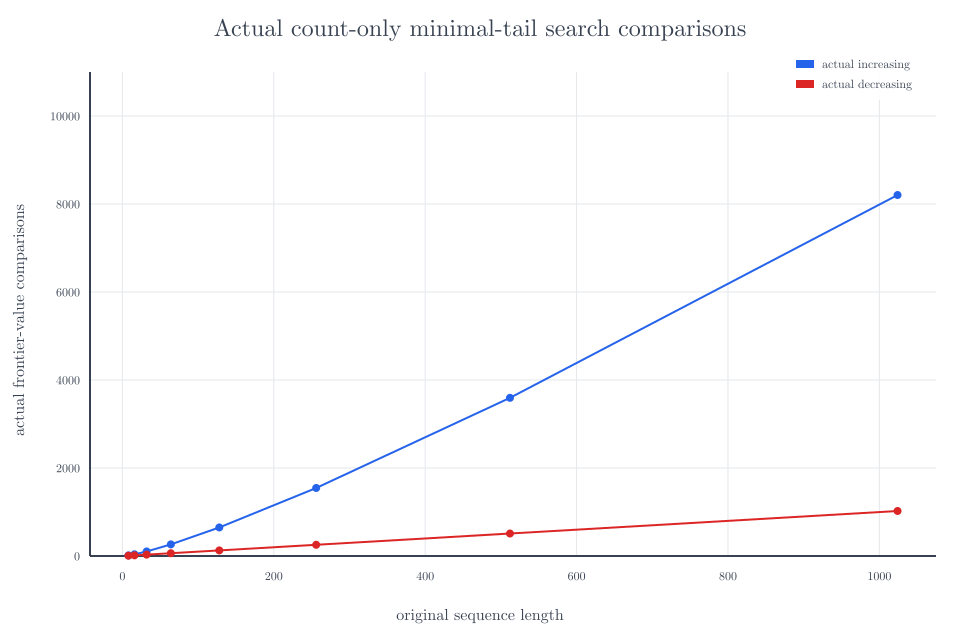

Longest strictly increasing subsequences
Abstract
A minimal-tail frontier summarizes the best ending value for every attainable increasing length. That frontier need not itself be a subsequence: actual predecessor links reconstruct the witness. We inspect the real native searches and frontier updates, retain the original16-element example and show strict duplicate handling plus actual comparison counts, with no report-side index recovery or algorithm replay.
Why minimal tails suffice
After each input prefix, frontier class k stores the smallest attainable final value of a strictly increasing subsequence of length k+1. Incoming x replaces the first class whose value is at least x, or appends when all frontier values are smaller. A smaller ending value can extend every future continuation available to a larger ending value of the same length, so discarding the larger tail cannot lose an attainable optimum. Binary search is valid because these minimal tail values strictly increase by class.
Record an actual predecessor from the preceding class before changing the frontier. The parent is an earlier source identity with smaller value. Inductively these links form a valid witness of the represented length. Following links from the final highest class reconstructs an optimal subsequence. Equal incoming values replace, rather than append, so this is strictly increasing LIS, not a longest nondecreasing sequence. No unique, earliest-index or lexicographically smallest optimum is promised.
Frontier values are not the witness
For input2,3,1, the last incoming1 replaces the length1 tail. The final frontier holds original identities2,1, whose values are1,3 but whose identities run backward. The real length2 witness still follows index1’s earlier parent0, giving source identities0,1 and values2,3. This tiny example shows why the native API now returns the actual selected indices rather than asking the report to rediscover matching values.
#include <dm/dm.hpp>
int main() {
std::filesystem::create_directories("build");
auto t = dm::algorithms::lis_trace({2, 3, 1});
std::print("| actual insertion source | actual incoming value | actual chosen length class | actual " "predecessor or none | actual frontier source indices after |\n| ---: | ---: | ---: | --- | " "--- |\n");
for (auto &e : t.insertions) {
std::string frontier;
for (auto i : e.after)
frontier += std::format("{} ", i);
std::print("| {} | {} | {} | {} | {} |\n", e.input_index,
t.input[e.input_index], e.length_class,
e.predecessor == std::numeric_limits<std::size_t>::max()
? "none" : std::to_string(e.predecessor), frontier);
}
dm::graphics::Diagram d;
d.node("input", {0, 0},
"Actual original sequence\nindex0:2; index1:3; index2:1").node(
"frontier", {7, 2},
std::format("Actual final tail identities\n{}, {} (not source order)",
t.final_tails[0], t.final_tails[1])).node(
"witness", {7, -2},
std::format("Actual linked witness identities\n{}, {} (values{}, {})",
t.analysis.indices[0], t.analysis.indices[1],
t.analysis.sequence[0], t.analysis.sequence[1])).edge(
"input", "frontier").edge("input", "witness");
d.save_svg("build/lis_frontier.svg");
}| actual insertion source | actual incoming value | actual chosen length class | actual predecessor or none | actual frontier source indices after |
|---|---|---|---|---|
| 0 | 2 | 0 | none | 0 |
| 1 | 3 | 1 | 0 | 0 1 |
| 2 | 1 | 0 | none | 2 1 |

Original sixteen-element example
Retain0,8,4,12,2,10,6,14,1,9,5,13,3,11,7,15. The actual deterministic result remains0,2,6,9,11,15, length6, at original indices0,4,6,9,13,15. The plot uses those exact producing identities. The old report searched the values again to find display indices, which can select a different occurrence when values repeat; no such recovery loop is used here.
Native trace also exposes every actual lower-bound comparison and committed frontier. These optional records do not change the ordinary tie convention or construct the result through repeated-prefix calls.
#include <dm/dm.hpp>
int main() {
std::filesystem::create_directories("build");
std::vector<int> a{0, 8, 4, 12, 2, 10, 6, 14, 1, 9, 5, 13, 3, 11, 7, 15};
auto t = dm::algorithms::lis_trace(a);
std::vector<double> x, y, lx, ly;
for (std::size_t i = 0; i < a.size(); ++i) {
x.push_back(i);
y.push_back(a[i]);
}
std::print("| actual witness position | actual original index | actual selected value | actual " "predecessor source index or none |\n| ---: | ---: | ---: | --- |\n");
for (std::size_t j = 0; j < t.analysis.indices.size(); ++j) {
auto i = t.analysis.indices[j];
auto parent = t.predecessor[i];
std::print("| {} | {} | {} | {} |\n", j, i, t.analysis.sequence[j],
parent == std::numeric_limits<std::size_t>::max() ? "none"
: std::to_string(parent));
lx.push_back(i);
ly.push_back(t.analysis.sequence[j]);
}
std::print("\nActual binary comparisons {}; actual appended classes {}; actual replaced classes {}; " "actual link backtrack visits {}.\n",
t.analysis.work.comparisons, t.analysis.work.appends,
t.analysis.work.replacements, t.analysis.work.backtrack);
auto p = dm::graphics::RPlot::create();
p.line(x, y, "original sequence", {148, 163, 184}, 1.5).points(
x, y, "", {148, 163, 184}, 5).line(lx, ly, "actual selected witness",
{37, 99, 235}, 2.5).points(
lx, ly, "", {37, 99, 235}, 7).y_limits(-1, 21).title(
"Original16 values and actual source-index witness").x_label(
"original source index").y_label("original integer value").save_svg(
"build/lis_original.svg");
}| actual witness position | actual original index | actual selected value | actual predecessor source index or none |
|---|---|---|---|
| 0 | 0 | 0 | none |
| 1 | 4 | 2 | 0 |
| 2 | 6 | 6 | 4 |
| 3 | 9 | 9 | 6 |
| 4 | 13 | 11 | 9 |
| 5 | 15 | 15 | 13 |
Actual binary comparisons 31; actual appended classes 6; actual replaced classes 10; actual link backtrack visits 6.

Duplicate values do not extend strict LIS
Equal values replace the first non-smaller frontier class. For1,1, the one-element witness comes from the later identity1. This is a deterministic implementation tie, not an earliest-index guarantee. On1,1,2,2,3,3, the length is3, while the nondecreasing version could retain all six values. The original integer domain includes INT_MIN and INT_MAX; comparisons avoid subtracting values, so no signed-value-difference overflow is needed. The following actual strict witnesses show source identities as well as lengths.
#include <dm/dm.hpp>
int main() {
std::filesystem::create_directories("build");
std::vector<std::vector<int>> controls{{1, 1}, {1, 1, 2, 2, 3, 3},
{3, 2, 1}, {1, 2, 3}, {}};
std::vector<double> x, y;
std::print("| explicit control index | original length | actual strict LIS length | actual selected " "source indices |\n| ---: | ---: | ---: | --- |\n");
for (std::size_t k = 0; k < controls.size(); ++k) {
auto a = dm::algorithms::lis_analyze(controls[k]);
std::string indices;
for (auto i : a.indices)
indices += std::format("{} ", i);
std::print("| {} | {} | {} | {} |\n", k, controls[k].size(),
a.sequence.size(), indices.empty() ? "empty" : indices);
x.push_back(k);
y.push_back(a.sequence.size());
}
auto p = dm::graphics::RPlot::create();
p.points(x, y, "actual strict length", {37, 99, 235}, 6).y_limits(-.2, 4.5).title("Actual strict duplicate and order controls").x_label("listed original control index").y_label("actual strictly increasing subsequence length").save_svg("build/lis_strict.svg");
}| explicit control index | original length | actual strict LIS length | actual selected source indices |
|---|---|---|---|
| 0 | 2 | 1 | 1 |
| 1 | 6 | 3 | 1 3 5 |
| 2 | 3 | 1 | 2 |
| 3 | 3 | 3 | 0 1 2 |
| 4 | 0 | 0 | empty |

Producing work and optional capture costs
Binary search uses O(log(L+1)) comparisons against the current frontier of length L, so total ordinary work is O(n*log(n+1)) and predecessor/runtime storage O(n). Reconstruction visits exactly the final witness length. These are selected logical operations, not elapsed-time measurements. Decreasing input keeps a one-class frontier and performs n−1 comparisons, while increasing input grows the frontier and incurs more actual binary-search comparisons.
Optional trace snapshots copy the real before/after frontier on every insertion. On increasing input that capture is quadratic in stored frontier members, despite the ordinary algorithm’s n-log-n work. The work study below uses count-only analysis, so it does not conflate optional history-copy work with the producing binary-search counter.
#include <dm/dm.hpp>
int main() {
std::filesystem::create_directories("build");
std::vector<double> x, increasing, decreasing;
std::print("| original length | actual increasing comparisons | actual decreasing comparisons | actual " "increasing witness length | actual decreasing witness length |\n| ---: | ---: | ---: | ---: " "| ---: |\n");
for (int n : {8, 16, 32, 64, 128, 256, 512, 1024}) {
std::vector<int> a(n);
std::iota(a.begin(), a.end(), 0);
auto up = dm::algorithms::lis_analyze(a);
std::reverse(a.begin(), a.end());
auto down = dm::algorithms::lis_analyze(a);
std::print("| {} | {} | {} | {} | {} |\n", n, up.work.comparisons,
down.work.comparisons, up.sequence.size(),
down.sequence.size());
x.push_back(n);
increasing.push_back(up.work.comparisons);
decreasing.push_back(down.work.comparisons);
}
auto p = dm::graphics::RPlot::create();
p.line(x, increasing, "actual increasing", {37, 99, 235}, 2).points(
x, increasing, "", {37, 99, 235}, 4).line(x, decreasing,
"actual decreasing",
{220, 38, 38}, 2).points(
x, decreasing, "", {220, 38, 38}, 4).y_limits(0, 11000).title(
"Actual count-only minimal-tail search comparisons").x_label(
"original sequence length").y_label("actual frontier-value comparisons").save_svg("build/lis_work.svg");
}| original length | actual increasing comparisons | actual decreasing comparisons | actual increasing witness length | actual decreasing witness length |
|---|---|---|---|---|
| 8 | 13 | 7 | 8 | 1 |
| 16 | 38 | 15 | 16 | 1 |
| 32 | 103 | 31 | 32 | 1 |
| 64 | 264 | 63 | 64 | 1 |
| 128 | 649 | 127 | 128 | 1 |
| 256 | 1546 | 255 | 256 | 1 |
| 512 | 3595 | 511 | 512 | 1 |
| 1024 | 8204 | 1023 | 1024 | 1 |

Contracts and verification
All int values, empty inputs and duplicates are valid. Complete predecessor/container/comparison geometry is checked before runtime allocation. Results own both actual selected values and their original identities; predecessor sentinels are SIZE_MAX. Ordinary/count-only APIs share the actual comparison/update/backtrack kernel and retain no optional snapshots. No input mutation or shared state is introduced.
Trace counts2*n original/predecessor entries, each actual probe, each insertion record and its real before/after frontier members, plus final frontier entries. Input counts are admitted before copies; subsequent actual records are admitted before append/copy, with complete result or exception. The million-record default excludes scalar fields/capacities/output/runtime copies and bytes/RAM;0 disables only the optional cap. All states are owned and no prefix replay reconstructs them.
Native tests exhaust all 9841 ternary words through length eight against
independent quadratic endpoint DP, checking actual selected indices,
predecessors, frontier comparisons, work and ownership. The ten-report batch
passed 101 native CTest cases, 34 directly instrumented ASan/UBSan cases, 103
compiled/executed public examples, 515/515 scoped file definitions plus 10 exact
LCG class definitions, and ten representative clangd hovers. Independent Python
integer/Fraction, explicit-label graph search, quadratic sequence DP and full
weighted-stump references passed 69430 records across all ten topics, including
a separately fitted held-out Iris model. Frozen ordinary compatibility passed
1000 Lex-BFS orders, 1000 library sorts, 100 LBG codebooks, 100 complete
five-round LogitBoost ensembles and 200 LLL bases; corrected LBG final
labels/objectives are intentionally excluded from historical compatibility. All
4 complete programs executed and all 4 native figures were rendered and visually
reviewed, with clipped legends corrected and rerun. HTML/Markdown
computed-result and figure-byte checks gate legacy retirement. Repeatable
receipts are retained in build/mepml-conversion/batch-204-213/.
References
M. L. Fredman(1975), On Computing the Length of Longest Increasing Subsequences, Discrete Mathematics11(1),29–35. This API uses a minimal-tail lower-bound search and explicit predecessor links to recover one actual strict witness, with its tie behavior stated above.